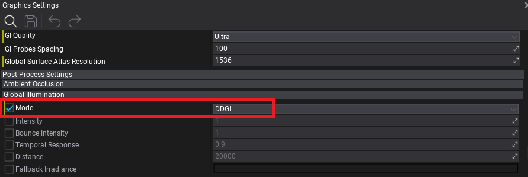
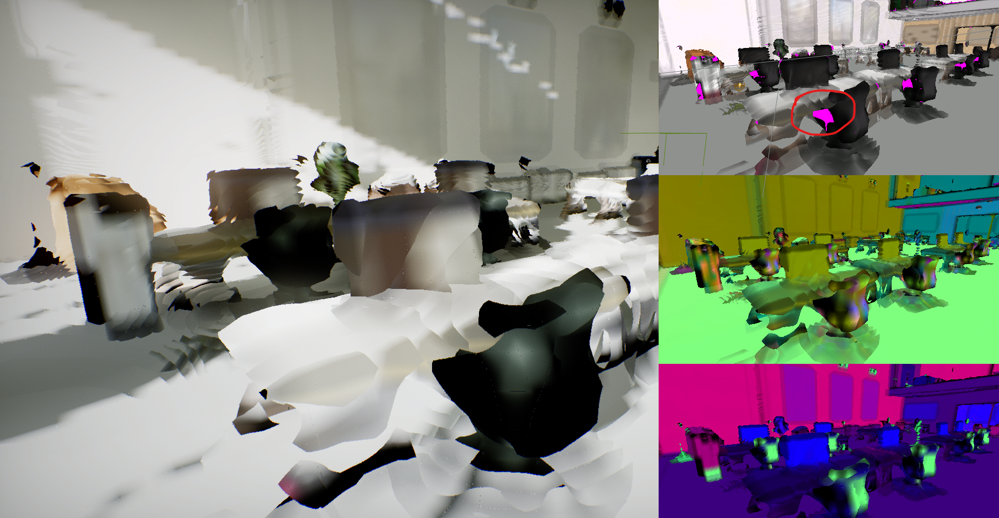

HOWTO: Setup Realtime Global Illumination

In this tutorial you will learn how to setup Realtime Global Illumination in your project and use it to have realistic lighting in your scenes.
See Realtime Global Illumination page to learn basics about GI in Flax.
1. Enable DDGI
Firstly open Graphics Settings and in Global Illumination section, under Post Process Settings, set Mode to DDGI. This will enable realtime GI rendering globally.

2. Enable Ray Traced Reflections
The next step is to enable using Software Tracing for Trace Mode in Screen Space Reflections settings (inside Graphics Settings). This will enable using Global Surface Atlas raytracing as a fallback to normal screen-space tracing which will enhance reflective surfaces look by adding off-screen reflections of the whole scene.
3. Setup SDF
Now, you need to ensure that all your scene meshes have proper Signed Distance Fields setup in order to be visible in Global SDF.
It's recommended to enable Generate SDF On Model Import option in Graphics Settings which will change the default model import value to always generate SDFs on model import.
Next time, you import model to the project it will be selected by default:

You can also manually generate SDF for all your models in project by using Model Window SDF section or use small utility in Editor under Tools -> Build all meshes SDF which will compute SDF for all meshes on the scene. It might take some time and freeze your computer due to large amount of data needed to process.
Use View -> Debug View -> Global SDF to insect your scene and ensure that it has good representation in SDF. It doen't need to be exact but should roughly represent major scene objects - especially walls, floor and ceiling of the structures.
3. Setup Surface Atlas
Now, use View -> Debug View -> Global Surface Atlas to debug the surface cache rendering that uses DDGI algorithm to calculate lighting inside the level. Global Surface Atlas is low-resolution representation of the scene, and combined with Global SDF has can roughly represent the scene which is used by DDGI raytracer (this shows what GI alrothim sees). Follow Software Ray Tracing amd Debugging Surface Atlas sections in DDGI docs to learn more.

The important thing during this step is to split large objects with interiors into smaller chunks thus the Surface Atlas can represent these object surfaces and have bounce on them. Common problem is using interior meshes of the whole house or other building wheras to have proper GI lighting inside it, the structure should be divided into 2 or 3 parts (eg. separate walls and separate floor). By using Global Surface Atlas debug view you can spot pink areas of the level that have missing representation in the atlas. If the area is large (eg. covers significant part of the screen) then you should optimize the content to work better with the algorrithm (eg. splitting meshes). Also, adding model LODs is a good practise as it greatly improves the performance.
Below you can see an example of non-ideal scene where walls and some props are largly covered in pink color which indicates missing coverage on Global Surface Atlas.
4. Test results and iterate
Finally, you can test and validate GI in your scenes. It should work fine after initial setup but might require some minor adjustments depending on your Content and gameplay in the world.
For further adusting, aside from things mentions above, use Temporal Response to improve responsivness of GI for lighting changes (eg. if set to 0.8) or increase it to make it more stable with less indirect lighting micro-flickering (eg. to 0.95). You can also manually boost or reduce GI Intensity and Bounce Intensity to control the artistic look of the lighting (eg. globally or per-scene with Post Fx Volume).